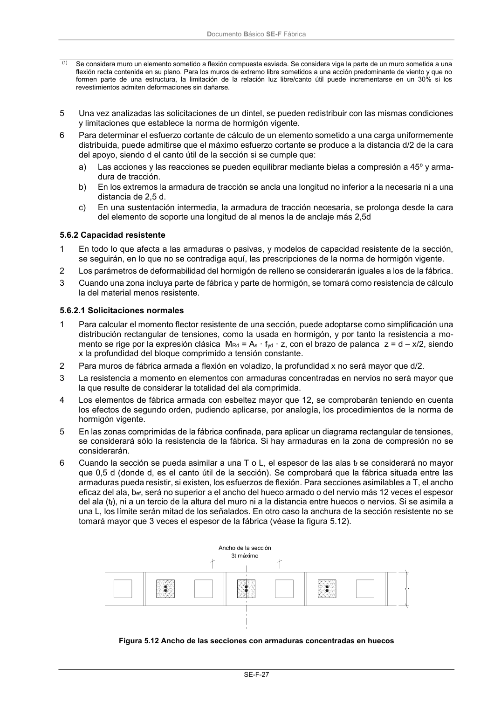

DB-SE-F · 5.6.2 Capacidad resistente · versión 2019-12-20 · capa oficial
Formatos: JSON compacto · Markdown · PDF fuente
Ámbito del documento · texto del ámbito · documento y tablas
ID técnico a0068 · PDF pág. 31 · jerarquía no validada por persona · contrastado con el literal de la página 31 (candidato tipográfico); no validado por persona · padre: a0066
5.6.2 Capacidad resistente 1 En todo lo que afecta a las armaduras o pasivas, y modelos de capacidad resistente de la sección, se seguirán, en lo que no se contradiga aquí, las prescripciones de la norma de hormigón vigente. 2 Los parámetros de deformabilidad del hormigón de relleno se considerarán iguales a los de la fábrica. 3 Cuando una zona incluya parte de fábrica y parte de hormigón, se tomará como resistencia de cálculo la del material menos resistente.

PDF fuente redistribuible: copia fiel enlazada en esta página (SHA256 verificado).